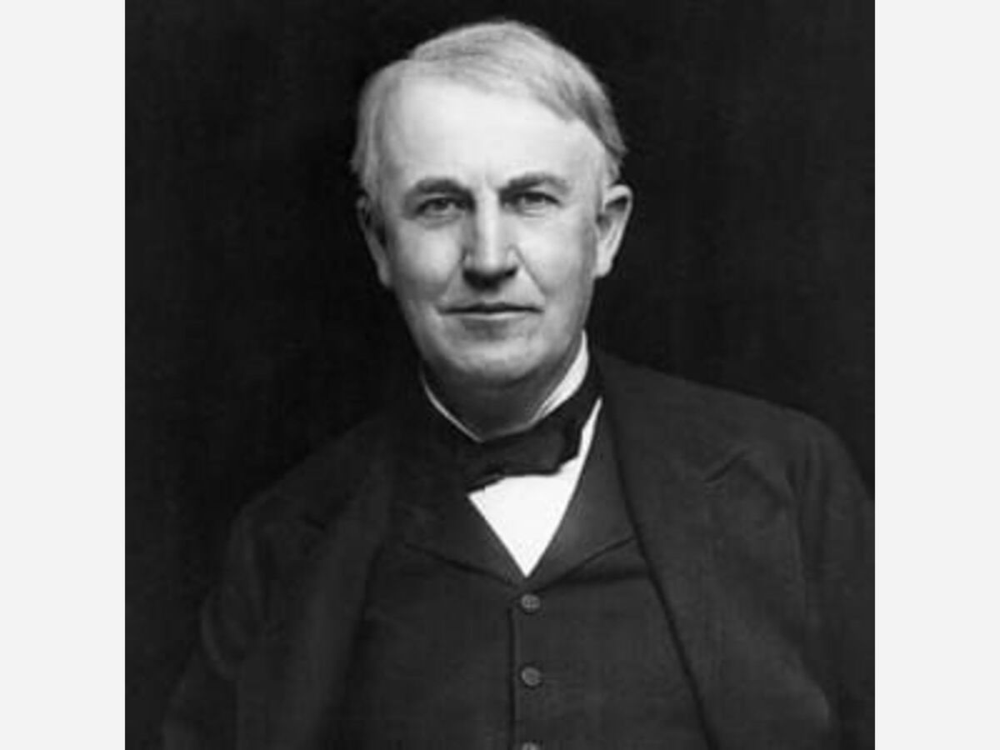

Some Things To Know About Edison

| Thomas Edison |
| Thomas Alva Edison |
| Born: February 11, 1847, Milan, OH
Died: October 18, 1931 (age 84 years), West Orange, NJ
|
| Organizations founded: General Electric ·
|
Thomas Edison had 6 kids |
| Children: Charles Edison, Thomas Alva Edison Jr. Theodore Miller Edison, Madeleine Edison, Marion estelle Edison, William Leslie Edison |
| he had two wifes |
|
Mina Miller Edison (m. 1886–1931) |
| Mary Stilwell (m. 1871–1884) |
| He didn't go to college but his Education: The Cooper Union (1875–1879)
|
| quotes from Edison “Genius is one percent inspiration, ninety-nine percent perspiration.” "There's a better way to do it - Find it." “Many of life's failures are people who did not realize how close they were to success when they gave up.” “We often miss opportunities because it's dressed in overalls and looks like work.”
|
| Thomas Alva Edison, one of the most famous and influential inventors to walk the earth, never attended high school or college but was awarded an honorary degree from Princeton in 1915!
|
| To learn more About this Edison click this link to find out more on his biography or copy it |
Link to ThomasEdison briefbiography